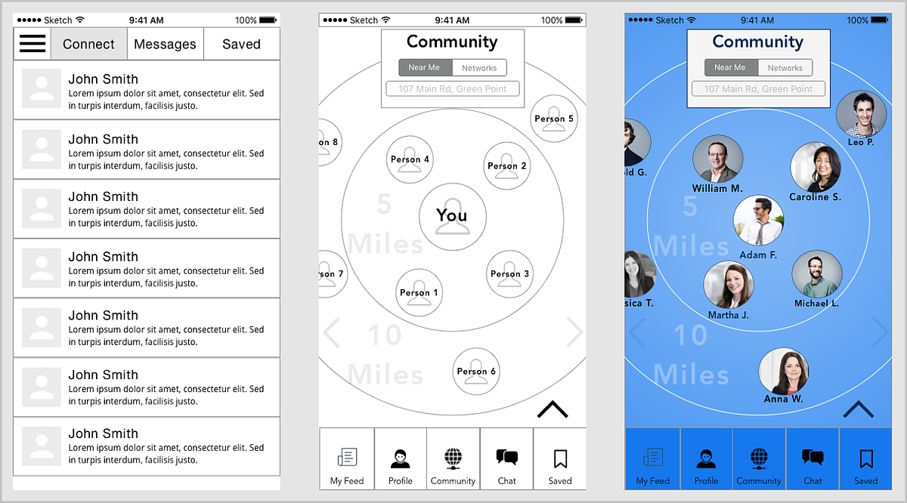
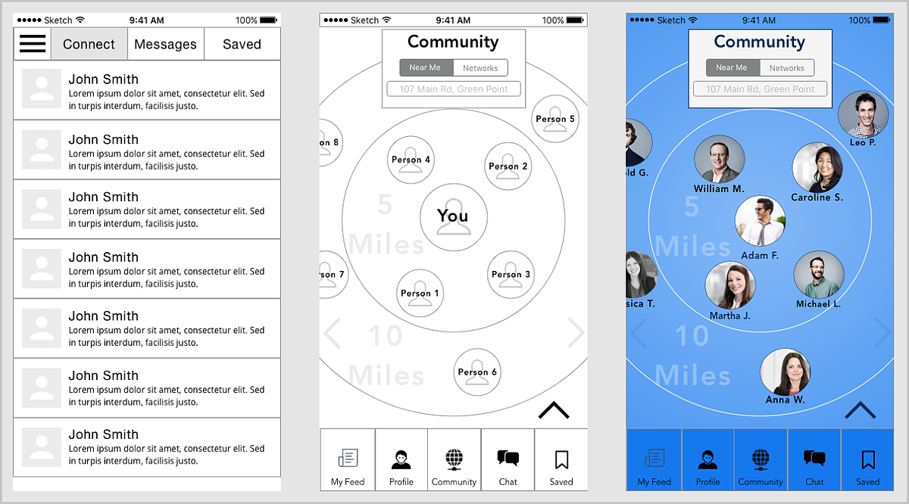
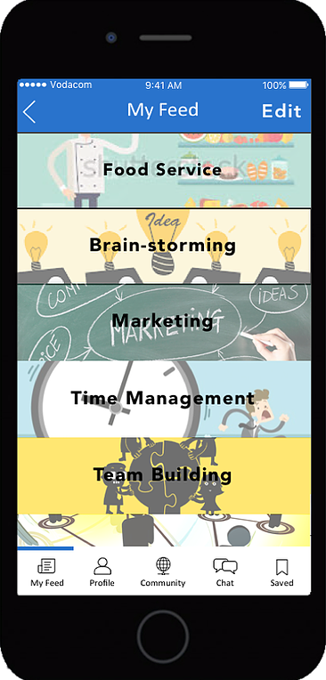
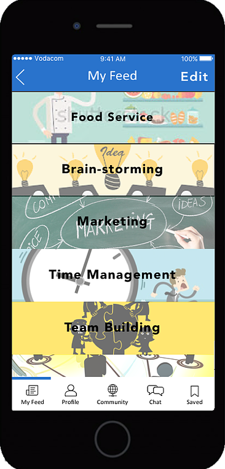

About me...
Raised in Long Island, New York. Currently a junior at Dartmouth College majoring in Computer Science modfied with Anthropology, and minoring in Human-Centered Design.
If I’m not sleeping, I'm either listening to music, hanging out with friends, or stumbling in the woods.
At Dartmouth, I'm a designer & developer at the Digital Arts, Leadership, and Innovation Lab, where I am constantly exposed to creativity and innovation—the two things that fuel me most.
I have a natural desire to solve well-defined problems in an uninhibited form, and am passionate about transforming simple ideas that could benefit others into a reality.
-

Email
-

Resume
-

LinkedIn


DALI Lab
Dartmouth College
Outlined feature specs and designed user-flow for an iOS application that aims to teach young males with Autism Spectrum Disorder how to practice a calming qigong massage.
Check it out
DALI Lab
Dartmouth College
Implemented designs for Deloitte Neuroscience Institute’s website using Javascript and HTML5/CSS.
Check it out
Full-Stack Web Development
Dartmouth College
Collaborative note-taking web app with real-time editing; built with React and Firebase.
Check it out
Full-Stack Web Development
Dartmouth College
Tumblr blog-style web-app with authentication and CRUD API server; built with React, Redux, MongoDB, and Express.
Check it out
DALI Lab
Dartmouth College
Designed an app that encourages people to get fit by virtually working out with others in real-time. Used Sketch to create designs and prototypes.

iXPERIENCE
Cape Town, South Africa
Designed an app that provides entry-level entrepreneurs with a support system by connecting them with successful experts in the area.
Anywhere
and everywhere
Featured here are mini-projects that I've completed while learning new skills. Programs include Principle Animation & Sketch.


Featured Locations:
Hanover, New Hampshire & Cape Town, South Africa


In the summer of 2016, I spent two months in Cape Town, South Africa learning the intricacies of User Experience Design. For my capstone project, three other students and I were given the topic of Small Businesses. Essentially, we were tasked
with designing an iOS application that would improve the lives of small-business owners.
Not well versed in the pain-points of small-business owners, we conducted interviews during the research phase of the class.
After gathering data from shop-owners around Cape Town, we developed personas, journey maps, and user stories. Next was the ideation phase. My group brainstormed possible solutions to a problem we identified from our research—small business-owners
lack necessary information for a smooth transition into the entrepreneurial world.
We decided to build a networking app that would connect entry-level entrepreneurs with successful and knowledgeable businessmen and -women.
After designing and testing paper prototypes, and conducting heuristic evaluations, it was time to build and test lo-fi wireframes in order to see what worked. We studied concepts like emotional design and micro-interactions to further help
us with the minute details of the app. During the last step, or hi-fi phase, we made style-guides and mood-boards to help us determine the overall theme of our app. At the end of the course, we pitched our app idea to the rest of the 200 kids
in the iXperience program, marketing Kinekt as an app designed to connect young entrepreneurs in a social and dynamic way.
Research/Ideation
We began by interviewing entrepreneurs in South Africa as well as young American entrepreneurs about their goals, frustrations, and needs. From those interviews we formed insights that guided us throughout the process. We also performed a market analysis and found that while there currently are many apps on the market for young entrepreneurs, they lacked an empathetic quality.

Personas & Journey Maps
We created several personas and journey maps to help us better understand our user base.


Lo-fi Wireframes
We narrowed down our app to include four features that we deemed the most important: Profile, Newsfeed, Community, and Chat.
Initial Screen Prototypes

User-flow Iteration

Screen Iterations

 

Final Prototype

 



Next Steps
For the majority of the four weeks, our group focused on research, ideation, and low-fi prototypes. Although we were proud of the app's concept and functionality, we felt we needed to test the hi-fi prototype more and iterate further on both the branding and the hi-fi prototype.